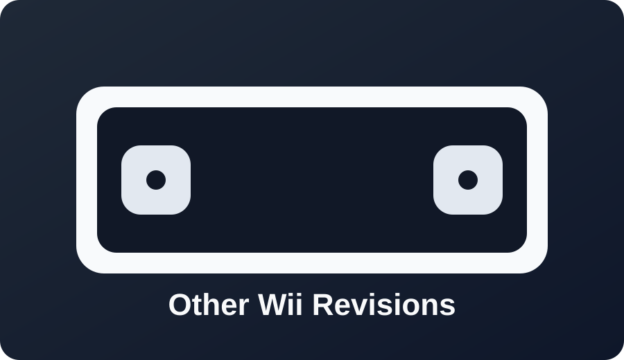

Other Wii revisions

Use the exploit path that matches your exact firmware, region, and serial range.
Most users can still follow the LetterBomb/str2hax family of methods.

Use the exploit path that matches your exact firmware, region, and serial range.
Most users can still follow the LetterBomb/str2hax family of methods.